<!DOCTYPE html>
<html lang="zh" class="loading">
<head><meta name="generator" content="Hexo 3.9.0">
    <meta charset="UTF-8">
    <meta http-equiv="X-UA-Compatible" content="IE=edge,chrome=1">
    <meta name="viewport" content="width=device-width, minimum-scale=1.0, maximum-scale=1.0, user-scalable=no">
    <title>先进生产工具搜罗和简介 - WhiteRobe&#39;s Blog</title>
    <meta name="apple-mobile-web-app-capable" content="yes">
    <meta name="apple-mobile-web-app-status-bar-style" content="black-translucent">
    <meta name="google" content="notranslate">
    <link href="https://cdnjs.cloudflare.com/ajax/libs/KaTeX/0.11.0/katex.min.css" rel="stylesheet">
    <meta name="keywords" content="WhiteRobe, Blog,"> 
    <meta name="description" content="着眼实例，从最简单的开始；你觉得再简单不过的东西，或许在别人眼里那就是悬崖。而我，愿作那攀岩绳。,
本文所属维护仓库： DaZaHui/先进生产工具搜罗和简介。后续更新将以此处为主。


DaZaHui/先进生产工具搜罗和简介

    
    
    
    
    

 What i,"> 
    <meta name="author" content="WhiteRobe"> 
    <link rel="alternative" href="atom.xml" title="WhiteRobe&#39;s Blog" type="application/atom+xml"> 
    <link rel="icon" href="/img/favicon.png"> 
    <link rel="stylesheet" href="//cdn.jsdelivr.net/npm/gitalk@1/dist/gitalk.css">
    <link rel="stylesheet" href="/css/animate.css">
    <link rel="stylesheet" href="/css/fira_code.css">
    <link rel="stylesheet" href="/css/diaspora.css">
    <script async src="https://busuanzi.ibruce.info/busuanzi/2.3/busuanzi.pure.mini.js"></script>
    
        <!--站内搜索API-->
        <script src="https://cdn.jsdelivr.net/algoliasearch/3/algoliasearch.min.js"></script>
        <link rel="stylesheet" href="https://cdn.jsdelivr.net/npm/instantsearch.css@7.3.1/themes/algolia-min.css" integrity="sha256-HB49n/BZjuqiCtQQf49OdZn63XuKFaxcIHWf0HNKte8=" crossorigin="anonymous">
        <script src="https://cdn.jsdelivr.net/npm/instantsearch.js@3.4.0/dist/instantsearch.production.min.js" integrity="sha256-pM0n88cBFRHpSn0N26ETsQdwpA7WAXJDvkHeCLh3ujI=" crossorigin="anonymous"></script>
    
    <!-- <script async src="//pagead2.googlesyndication.com/pagead/js/adsbygoogle.js"></script>
    <script>
          // No more ads!
         (adsbygoogle = window.adsbygoogle || []).push({
              google_ad_client: "ca-pub-8691406134231910",
              enable_page_level_ads: true
         });
    </script>
    <script async custom-element="amp-auto-ads"
        src="https://cdn.ampproject.org/v0/amp-auto-ads-0.1.js">
    </script> -->
</head>
</html>
<body class="loading">
    <span id="config-title" style="display:none">WhiteRobe&#39;s Blog</span>
    <div id="loader"></div>
    <div id="single">
    <div id="top" style="display: block; display: block;position: fixed; top: 0px;">
    <div class="bar" style="width: 0;"></div>
    <a class="icon-home image-icon" href="javascript:;" data-url="https://blog.whiterobe.top"></a>
    <div title="播放/暂停" class="icon-play"></div>
    <h3 class="subtitle">先进生产工具搜罗和简介</h3>
    <div class="social">
        <!--<div class="like-icon">-->
            <!--<a href="javascript:;" class="likeThis active"><span class="icon-like"></span><span class="count">76</span></a>-->
        <!--</div>-->
        <div style="font-size: 1rem;margin-right: -10px">
          分享此文：
        </div>
        <div>
          <div class="share">
              <a title="获取文章地址二维码" class="icon-scan" href="javascript:;"></a>
          </div>
          <div id="qr"></div>
        </div>
    </div>
    <div class="scrollbar"></div>
</div>

    <div class="section" style="margin-top: 50px">
        <div class="article">
    <div class='main'>
        <h1 class="title">先进生产工具搜罗和简介</h1>
        <div class="stuff">
            <span>十月 20, 2019</span>
            <span id="busuanzi_container_page_pv" class="busuanzi_page" style="display:none">本文总阅读量<div id="busuanzi_value_page_pv" style="display: inline;">1</div>次</span>
            
  <ul class="post-tags-list"><li class="post-tags-list-item"><a class="post-tags-list-link" href="/tags/软件推荐/">软件推荐</a></li></ul>


        </div>
        <div class="low-resolution-warn-info">当前设备屏幕尺寸过小，推荐使用PC模式浏览。</div>
        <div class="content markdown">
            <blockquote>
<p>本文所属维护仓库： <a href="https://github.com/WhiteRobe/dazahui" target="_blank" rel="noopener">DaZaHui/先进生产工具搜罗和简介</a>。后续更新将以此处为主。</p>
</blockquote>
<hr>
<h1 align="center">DaZaHui/先进生产工具搜罗和简介</h1>
<p align="center">
    <br><br>
    
    
    
    
</p>
<h2 id="what-is-this"><a class="markdownIt-Anchor" href="#what-is-this"></a> What is this?</h2>
<p><strong>&quot;DaZaHui/先进生产工具搜罗和简介&quot;项目</strong>，将会索引和搜集一些新手向的工具，并给出介绍和使用环境/案例，避免无谓的重复造轮子行为。</p>
<p>索引的工具将会根据开发过程中所服务的场景进行简易<code>Tag</code>，并遵循以下原则：</p>
<ol>
<li>
<p>价格便宜(5$/Mo或1￥/day)或者提供免费的社区版、拥有教育版资源。</p>
</li>
<li>
<p>稳定，并尽量保证是商业化的产品而不是社区维护版。</p>
</li>
<li>
<p>合法合规，在已知的情况下，没有暗藏后门/收费陷阱。</p>
</li>
<li>
<p>我将会默认你申请了<code>GitHub Education Pack</code>，并拥有一些基本的网络访问能力、可以阅读英文和使用英文。</p>
</li>
</ol>
<blockquote>
<ul>
<li>项目将逐步更新，任何推荐请提<code>pull request</code>；同时，编写过程中难免会有疏漏，例如错别字、概念错误、文法紊乱等，请帮助我改正。</li>
<li>由于是新手向，会穿插一些知识性内容的简单介绍；如果你比较熟悉这部分内容，可以直接跳过。</li>
<li>可能会略长，使用<code>Ctrl+F</code>查询业务关键字能够直接跳到相应内容。</li>
</ul>
</blockquote>
<h2 id="基础开发者包"><a class="markdownIt-Anchor" href="#基础开发者包"></a> 基础开发者包</h2>
<ol>
<li>GitHub黄书包(Education Pack)</li>
</ol>
<p align="center">
    
</p>
<blockquote>
<p><strong>介绍</strong></p>
<p>由于其图标为一个黄书包而得名，实际上其真正的名字为<code>Education Pack</code>，及教育包。一旦申请成功，你将拥有大量的特殊优惠及免费的教育版软件/产品可用，而且参与Github该项计划的公司每年都在增加。如果你还没有申请过黄书包或者拥有一个GitHub账号，请务必把它当成&quot;身为一名程序员&quot;所必备基础知识。</p>
<p><strong>申请流程</strong></p>
<p>你需要拥有一个教育邮箱，即<code>xx@xxx.edu.xxx</code>；由于前几年有些人恶意注册<code>edu</code>邮箱和使用野鸡大学的邮箱薅GitHub的羊毛(国人不在少数)，因此只拥有<code>edu</code>邮箱实际上并不能保证申请到这个教育包。你还需要提供你的在校证明、成绩单、学生证件等至少一项内容，并且等待一周左右的时间。</p>
</blockquote>
<ul>
<li><a href="https://education.github.com/pack" target="_blank" rel="noopener">申请地址</a></li>
</ul>
<ol start="2">
<li>乌龟Git(Tortoise Git)</li>
</ol>
<p align="center">
    
</p>
<blockquote>
<p><strong>介绍</strong></p>
<p>这是Windows平台上功能最强大的Git Shell图形化接口。好的Git Bash使用技能是必不可少的但并不是总是有价值的，图形化的操作能减少我们的大量重复操作时间。</p>
<p>需要注意的是，你还需要安装Git，并设置Tortoise Git的Git.exe地址；你不应当使用其它的shell或git软件(包括Tortoise Git自带的)对GitHub进行操作，详情可以自行搜索关键词。</p>
</blockquote>
<ul>
<li><a href="https://tortoisegit.org/" target="_blank" rel="noopener">官网地址</a></li>
</ul>
<ol start="3">
<li>乌贼Git(GitKraken)</li>
</ol>
<p align="center">
    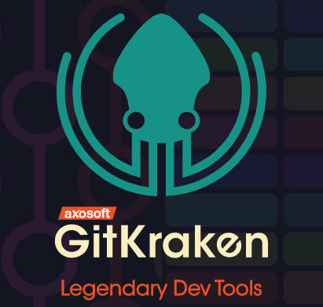
</p>
<blockquote>
<p>相比于Tortoise Git，GitKraken功能较弱，但拥有更好看的界面；大部分操作它也实现了图形化操作，并与GitHub深度结合，这一点是GitHub Desktop或Tortoise Git所不能比的。最重要的是，它是唯一一款稳定的跨平台Git GUI，可在Mac、Windows和Linux上运行。如果你无法使用Tortoise Git，你可以尝试这款软件。</p>
<p>GitKraken已经加入GitHub黄书包，可以免费使用<code>Pro</code>版本的软件哦。</p>
</blockquote>
<ul>
<li><a href="https://www.gitkraken.com/" target="_blank" rel="noopener">官网地址</a></li>
</ul>
<ol start="4">
<li>Chrome</li>
</ol>
<blockquote>
<p><strong>介绍</strong></p>
<p>如果你还没用过Chrome和它的相关插件，那么你一定无法理解为什么“去客户端化”变得如此流行。越来越快的网速和越来越大的内存给了我们更多使用Chrome的理由，赶紧删了你们电脑里各种充满了套路和广告的全家桶浏览器，使用Chrome吧。</p>
<p>我们开玩笑的时候总是说，编程就是“文档+搜索引擎”，所以一个好的浏览器是至关重要的。因此我把它放到了这个栏位里。</p>
</blockquote>
<ol start="5">
<li>Typora</li>
</ol>
<p align="center">
    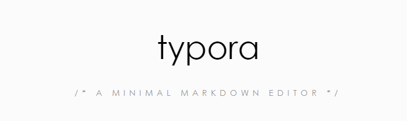
</p>
<blockquote>
<p><strong>介绍</strong></p>
<p>世界上最好用的Markdown编辑器之一。</p>
<p>之所以把它放在这里，因为编写Markdown早已是程序员的必备技能。但是我发现还有很多人在使用落后的Markdown Pad之类的工具、依照那些古老的博客的指引固执地使用Sublime Text等文本编辑器，费劲地装各种插件以实现敲Markdown这样一个简单的需求。</p>
<p>为什么不直接使用这个免费又好用的编辑器呢？</p>
<ul>
<li>编辑即可视，再也不用把屏幕分成两半来预览效果了。</li>
<li>各种主题可供选择和下载，满足程序员的爱美之心。</li>
<li>启动速度快，配合<code>Win + Q</code> +<code>Typora</code>，会让你爱上使用Markdown写文章。</li>
</ul>
</blockquote>
<ul>
<li><a href="https://www.typora.io/" target="_blank" rel="noopener">官网地址</a></li>
</ul>
<ol start="6">
<li>火绒和AdGuard</li>
</ol>
<p align="center">
    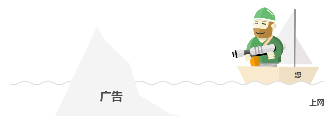
</p>
<blockquote>
<p><strong>介绍</strong></p>
<p>之所以要介绍这两款软件，是因为：<strong>你不觉得你的电脑慢吗?</strong></p>
<p>过多的垃圾广告延缓了你的网页打开时间、各类追踪器不断记录你的上网数据，使得越来越多莫名奇妙的推销广告和电话找上门来，你不烦吗？</p>
<p>智商管家和数字助手不断在后台拖慢你电脑的运行速度，用子虚乌有的报警和各类防不胜防的弹窗打断你的思路，你不生气么？</p>
<ul>
<li>火绒，足够安静，以至于你会一度怀疑这软件到底有没有在后台运行；它屏蔽掉所有系统级别的不安全选项和弹窗、注册表修改、软件自动升级；在Win10已经足够安全的今天，一个小而精的安全软件，而且它时那样的安静乖巧，你给我一个不用它而去使用各类智商管家、智商卫士的理由？</li>
<li>桌面版的AdGuard可能需要略微付费，但相对于你的个人隐私和因此节省的网页打开时间而言，这是非常值得的；另外，Chrome有免费的AdGuard插件可用，让你的网页瞬间清净。</li>
<li>作为一个程序员，只有保证你的电脑足够敏捷、响应足够灵巧，才能够更优雅、更高效地编程，这是我把它们放在这个位置的理由。</li>
</ul>
</blockquote>
<ul>
<li><a href="https://www.huorong.cn/" target="_blank" rel="noopener">火绒安全</a></li>
<li><a href="https://adguard.com/en/welcome.html" target="_blank" rel="noopener">AdGuard</a></li>
</ul>
<ol start="7">
<li>terminus</li>
</ol>
<p align="center">
    
</p>
<blockquote>
<p><strong>介绍</strong></p>
<p>一说到SSH工具，很多人脑海里想到的是XSHELL。但是Terminus也是一款不错的SSH客户端，仅从正版的角度，它有以下优点：</p>
<ul>
<li>相比于XSHELL而言更便宜。</li>
<li>PC端永久免费，只不过没有SFTP功能（Pro版本有）。</li>
<li>Pro版本支持在移动端使用，这是XSHELL所不能企及的。</li>
<li><a href="https://blog.whiterobe.top/2019/10/05/zh/terminus-intro/">更加详细的介绍</a></li>
</ul>
<p>它已加入GitHub黄书包，绑定GitHub黄书包账户可以直接使用Terminus Pro的功能。</p>
</blockquote>
<ul>
<li><a href="https://www.termius.com/" target="_blank" rel="noopener">官网地址</a></li>
</ul>
<ol start="8">
<li>Adobe全家桶</li>
</ol>
<p align="center">
    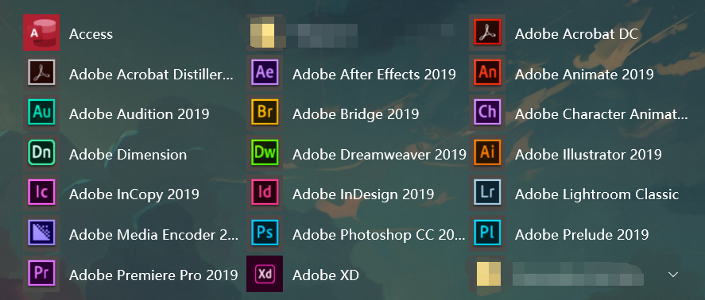
</p>
<blockquote>
<p><strong>介绍</strong></p>
<p>你可能要问，我一个程序员为什么要知道这些？</p>
<p>事实上，虽然Adobe全家桶设计师用得多一些，但一些基础的应用水平，对于一名个人开发者而言是必不可少的。比如简单的修图、抠图、音频修正、视频剪辑等等等，利用这些流媒体创作软件，可以更好地展示你的项目。</p>
<p>我会在下面列出一些比较基本的Adobe软件使用技能。</p>
</blockquote>
<ul>
<li><a href="https://www.adobe.com/" target="_blank" rel="noopener">官网地址</a></li>
</ul>
<table>
<thead>
<tr>
<th style="text-align:center">名称</th>
<th style="text-align:center">介绍</th>
<th style="text-align:center">作用</th>
<th style="text-align:center">链接</th>
</tr>
</thead>
<tbody>
<tr>
<td style="text-align:center">Adobe Photoshop</td>
<td style="text-align:center">图片编辑软件</td>
<td style="text-align:center">抠图修图</td>
<td style="text-align:center"><a href="https://www.adobe.com/cn/products/photoshop.html" target="_blank" rel="noopener">中文官网地址</a></td>
</tr>
<tr>
<td style="text-align:center">Adobe XD</td>
<td style="text-align:center">UX/UI设计平台</td>
<td style="text-align:center">进行网页或APP动效图的制作</td>
<td style="text-align:center"><a href="https://www.adobe.com/cn/products/xd.html" target="_blank" rel="noopener">中文官网地址</a></td>
</tr>
<tr>
<td style="text-align:center">Adobe After Effects</td>
<td style="text-align:center">视频编辑/特效软件</td>
<td style="text-align:center">视频剪辑等</td>
<td style="text-align:center"><a href="https://www.adobe.com/cn/products/aftereffects.html" target="_blank" rel="noopener">中文官网地址</a></td>
</tr>
<tr>
<td style="text-align:center">Adobe Illustrator</td>
<td style="text-align:center">矢量版画设计软件</td>
<td style="text-align:center">画画，陶冶情操</td>
<td style="text-align:center"><a href="https://www.adobe.com/cn/products/illustrator.html" target="_blank" rel="noopener">中文官网地址</a></td>
</tr>
<tr>
<td style="text-align:center">Adobe Premiere Pro</td>
<td style="text-align:center">视频编辑软件</td>
<td style="text-align:center">跟会声会影差不多的简单视频剪辑软件</td>
<td style="text-align:center"><a href="https://www.adobe.com/" target="_blank" rel="noopener">官网地址</a></td>
</tr>
</tbody>
</table>
<ol start="9">
<li>LastPass</li>
</ol>
<p align="center">
    
</p>
<blockquote>
<p><strong>介绍</strong></p>
<p>你可能会有很多账号，但是如果只用同一个密码或者简单改几个字符，还是非常容易被撞库攻击的。</p>
<p>LastPass可以直接集成到Chrome或是你的手机客户端，你可以保存一些不怎么重要的账号和密码到这款软件上(切记直接生成非常复杂的密码进行存储)；比如Nvidia开发者账号、Spotify音乐账号、各种临时注册的无所谓的账号等。</p>
<p>当然，对于大部分人来说，免费版就够用了。</p>
</blockquote>
<ul>
<li><a href="https://www.lastpass.com/zh" target="_blank" rel="noopener">官网地址</a></li>
</ul>
<ol start="10">
<li>支持差分的云盘</li>
</ol>
<p align="center">
    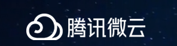
    
</p>
<blockquote>
<p><strong>介绍</strong></p>
<p>此处的云盘指的不是百度云盘这种纯存储的云盘。</p>
<p>假设你有这种需求：你需要在一个电脑编辑一个文件，但是临时需要回家一趟，你这时候可能需要把未做完的这个软件保存然后通过QQ等软件发送到家里的电脑上。不觉得很麻烦吗？</p>
<p>所以我要推荐“坚果云”、“腾讯微云”等差分云盘软件，这些软件可以自动扫描指定文件夹中的文件所发生的变动，然后仅仅把变动跟云端同步，这样你所有的设备都会收到这些变动。</p>
<p>下一次，带上你的笔记本，享受随时随地敲键盘的快感把。</p>
</blockquote>
<ol start="11">
<li>Docker</li>
</ol>
<p align="center">
    
</p>
<blockquote>
<p><strong>介绍</strong></p>
<p>无论是学术届还是软件开发，对Docker的使用已经越来越普遍。用比较通俗的说法来介绍Docker：</p>
<ul>
<li>把操作系统、依赖、环境变量和你所开发的应用等等等通通打包，这样在发布后别人使用你的应用无需从头开始搭建各类环境。</li>
</ul>
</blockquote>
<ul>
<li><a href="https://www.docker.com/" target="_blank" rel="noopener">官网地址</a></li>
</ul>
<ol start="12">
<li>JetBrains全家桶</li>
</ol>
<p align="center">
    
</p>
<blockquote>
<p><strong>介绍</strong></p>
<p>JetBrains系列的IDE的强大毋庸置疑，如果你还在使用落后的Eclipse或者Sublime等工具编辑你的代码，你最好走出你的编程舒适区，用一点时间来适应JetBrains的产品，你会发现在它所构建的开发环境下开发是多么愉快的一件事。当然，它也有它的缺点，比如启动速度慢、吃内存较大之类的问题。但你需要很频繁的打开关闭某几个文件么？你缺内存条么？</p>
<ul>
<li>不要再给自己的懒惰找借口和向从课堂/博客上学来的那些落后生产力妥协。</li>
<li>学生或者GitHub黄书包可以申请免费的全家桶。等于一年给你省了几千美金，这么良心的公司你为什么反感？</li>
<li>有中文客服，你可以使用中文提交工单，工作日内必答复。</li>
</ul>
</blockquote>
<ul>
<li><a href="http://www.jetbrains.com/" target="_blank" rel="noopener">官网地址</a></li>
</ul>
<h2 id="云服务产品"><a class="markdownIt-Anchor" href="#云服务产品"></a> 云服务产品</h2>
<p>云服务是一个大类，也是本工具索引集的主要内容。这里简单介绍<a href="index/cloud_intro.html">SaaS(软件即服务)、PaaS(平台即服务)和IaaS(基础架构即服务)</a>。</p>
<blockquote>
<p>事实上，除了少部分产品，大部分先进工具早已或即将依托于云服务，因此如果不做具体说明的话，我会把大部分工具归在这一类。</p>
</blockquote>
<hr>
<ol>
<li>Algolia</li>
</ol>
<p align="center">
    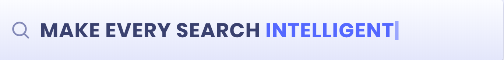
</p>
<blockquote>
<p><strong>介绍</strong></p>
<p>你可以认为Algolia是PaaS或者SaaS，因为它是如此的强大：<strong>搜索细化、关键词联想、产品分析、智能推荐、语音搜索、基于地理位置的搜索优化</strong>…</p>
<ul>
<li>如果你还在为你的博客或站点做站内搜索而苦恼，你可以使用Algolia在半小时内完成这个功能。</li>
<li>要知道，一个男人和女人搜索“食物”时，完全可能出现两种结果，这种搜索细化业务Algolia也已经帮你实现。</li>
<li>如果你在GitHub上有一个不错的项目，你想做一个类似Vue一样的文档内关键词检索，Algolia也已经为你提供了<a href="https://community.algolia.com/docsearch/" target="_blank" rel="noopener">免费的服务</a>。</li>
<li>合理合法，在中国大陆有自己的节点。</li>
</ul>
<p>Algolia加入了GitHub黄书包。</p>
</blockquote>
<ul>
<li><a href="https://www.algolia.com/" target="_blank" rel="noopener">官网地址</a></li>
</ul>
<ol start="2">
<li>CloudFlare</li>
</ol>
<p align="center">
    
</p>
<blockquote>
<p>全球最大的网站安全管理、性能优化及相关的技术支持商。</p>
<ul>
<li>有效避免你的网站被DDOS攻击、对你的网站流量进行有效监控和信息统计等等等。</li>
<li>合理合法，在中国大陆有节点。</li>
<li>最重要的是，提供了免费的DNS解析和CDN服务。</li>
</ul>
</blockquote>
<ul>
<li><a href="https://www.cloudflare.com/" target="_blank" rel="noopener">官网地址</a></li>
</ul>
<ol start="3">
<li>Zenodo</li>
</ol>
<p align="center">
    
</p>
<blockquote>
<p><strong>介绍</strong></p>
<p><strong>Zenodo</strong> 是一个多学科研究产品储存库，支持各种内容，包括刊物、演示文稿、论文集、项目、图像、软件（包括与 GitHub 的集成）以及所有语言的数据，由欧洲核子研究组织 (European Organization for Nuclear Research, CERN) 维护。</p>
<ul>
<li>把你的软件/论文成果发布到Zenodo上，会为你生成一个DOI(数字对象唯一标识符)。</li>
<li>生成一个Badge，可以放到GitHub上展示，如：<a href="https://zenodo.org/badge/latestdoi/214223313" target="_blank" rel="noopener"></a></li>
<li>你的DOI将会终生保存，并且DOI将会有利于你项目的传播与分享。</li>
<li>与GitHub深度集成，你的每一次Release都会自动触发Zenodo的API，为你生成DOI。</li>
</ul>
</blockquote>
<ul>
<li><a href="https://zenodo.org/" target="_blank" rel="noopener">官网地址</a></li>
</ul>
<ol start="4">
<li>免费Logo设计-U钙网</li>
</ol>
<p align="center">
    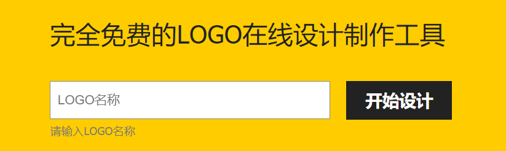
</p>
<blockquote>
<p><strong>介绍</strong></p>
<p>这是一个国内的网站，可能只在小众圈子里比较出名。尽管这个网站连SSL证书都没钱买，但是它的服务确实是很不错的。</p>
<p>如果你不想费太多心思设计的你的项目的LOGO或是一些个人用的头像，你不妨试试这个网站。比如，这个项目的LOGO就是我用了30s在这个网站生成的。</p>
<ul>
<li>免费，不用注册。真的是良心项目，站长用爱发电。</li>
<li>大量LOGO模板和字体可供选择。</li>
</ul>
</blockquote>
<ul>
<li><a href="http://www.uugai.com/" target="_blank" rel="noopener">官网地址</a></li>
</ul>
<ol start="5">
<li>Font Awesome</li>
</ol>
<p align="center">
    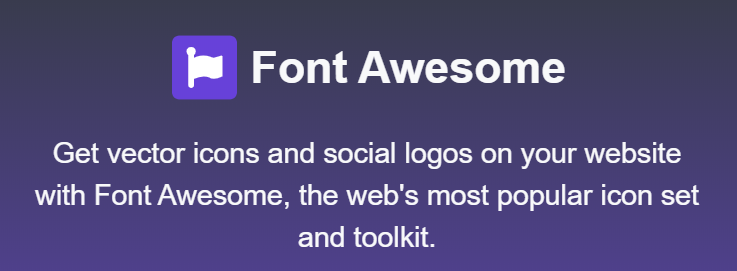
</p>
<blockquote>
<p><strong>介绍</strong></p>
<p>一个字体图标库，提供了大量的标准化图标以供使用。阿里有类似的产品，但是都要收费而且量不是很全。</p>
<ul>
<li>一个网站或者一个微信小程序中总是要用到大量的标准化图标，程序员不可能说既能写代码又能做设计；如果你是一个单打独斗的程序员，没有强有力的美工帮你，你就需要用到大量此类图标来美化你的网站。</li>
<li>不幸的事，由于这个网站用了亚马逊的云服务器，所以在国内访问不太稳定，因此我们需要把要用的图标集合都下到本地作为离线图标用——可能需要搭配下文介绍的<code>cdnjs</code>进行使用。</li>
</ul>
</blockquote>
<ul>
<li><a href="https://fontawesome.com/" target="_blank" rel="noopener">官网地址</a></li>
</ul>
<ol start="6">
<li>cdnjs</li>
</ol>
<p align="center">
    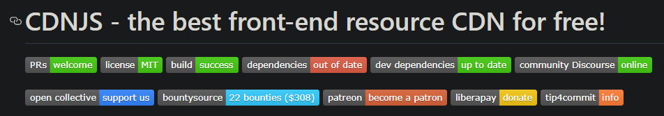
</p>
<blockquote>
<p><strong>介绍</strong></p>
<p>你可以把你的js、CSS、Image等根据<a href="https://github.com/cdnjs/cdnjs" target="_blank" rel="noopener">相关协议</a>发布到GitHub上，别人就可以利用CDN技术更快的访问你所发布的内容。理论上你可以使用它做图床，甚至是免费博客站点加速网络。</p>
<p>其次，我们开发网页时会用到各种在线的js库或者样式表，你从这个网站获取相应的内容速度会非常快，有利于优化你的程序打开时间，甚至节省服务器的流量开销。</p>
<ul>
<li>再举一个深一点的例子：你要使用<code>JQuery.js</code>，你如果选择本地保存这个文件<code>&lt;script src=&quot;./JQuery.js&quot;/&gt;</code>，用户打开你的网站都要从你的服务器拉取这个文件，这个过程就要消耗你服务器的流量，并且如果你的服务器性能不是很好，拉取文件的速度也会很慢；但如果用了<code>cdnjs</code>，用户将会从附近的内容分发网络获取文件，也就意味着会从一个质量更为优异的节点拉取这个文件，同时也替你省了服务器流量、加快了网站打开速度。</li>
</ul>
<p>所以，如果你之前不知道<code>cdnjs</code>，请现在立刻去了解它并使用它。</p>
</blockquote>
<ul>
<li><a href="https://cdnjs.com/" target="_blank" rel="noopener">官网地址</a></li>
</ul>
<ol start="7">
<li>Travis CI</li>
</ol>
<p align="center">
    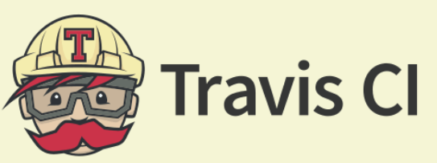
</p>
<blockquote>
<p><strong>介绍</strong></p>
<p>一个持续化自动测试平台，可以与GitHub挂钩，你的每次推送都将自动进行测试。</p>
<ul>
<li>好的测试决定了你的代码质量，并给了别人使用你的代码的理由。</li>
<li>可以获得一个酷炫的Badge：</li>
<li>与GitHub深度集成。</li>
</ul>
</blockquote>
<ul>
<li><a href="https://travis-ci.org/" target="_blank" rel="noopener">官网地址</a></li>
</ul>
<ol start="8">
<li>Coveralls</li>
</ol>
<p align="center">
    
</p>
<blockquote>
<p><strong>介绍</strong></p>
<p>同样，这还是个测试相关的平台，可以与GitHub和Travis CI进行集成，对代码的测试覆盖率进行统计和记录。</p>
<ul>
<li>你可以获得一个Badge： <a href="https://coveralls.io/github/WhiteRobe/citest?branch=master" target="_blank" rel="noopener"></a></li>
<li>只有经过良好测试的代码，才更容易被复用。</li>
<li>没有编写测试样例的代码都是垃圾代码。</li>
<li>与GitHub深度集成。</li>
</ul>
</blockquote>
<ul>
<li><a href="https://coveralls.io/" target="_blank" rel="noopener">官网地址</a></li>
</ul>
<ol start="9">
<li>Better Code Hub</li>
</ol>
<p align="center">
    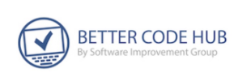
</p>
<blockquote>
<p><strong>介绍</strong></p>
<p>这个网站将会依据《<a href="https://www.amazon.cn/dp/B01B6WS86I" target="_blank" rel="noopener">Building Maintainable Software</a>》一书对你的代码质量进行检测，用实打实的数据告诉你，你的代码哪里写的不好哪里需要改进。</p>
<ul>
<li>与GitHub深度集成。</li>
<li>对于公共仓库，检测是免费的。</li>
<li>获得一个酷炫的Badge：</li>
</ul>
</blockquote>
<ul>
<li><a href="https://www.bettercodehub.com/" target="_blank" rel="noopener">官网地址</a></li>
</ul>
<ol start="10">
<li><a href="http://Shield.io" target="_blank" rel="noopener">Shield.io</a></li>
</ol>
<p align="center">
    
</p>
<blockquote>
<p><strong>介绍</strong></p>
<p>你是否想过别人GitHub仓库README上那些花花绿绿的徽章是怎么弄的？</p>
<ul>
<li>徽章可以使你的项目看起来更专业。</li>
<li>徽章可以用最简短的信息告诉别人你的项目的基础信息。</li>
</ul>
</blockquote>
<ul>
<li><a href="https://shields.io/" target="_blank" rel="noopener">官网地址</a></li>
<li><a href="https://github.com/badges/shields" target="_blank" rel="noopener">项目地址</a></li>
</ul>
<ol start="11">
<li>Lean Cloud</li>
</ol>
<p align="center">
    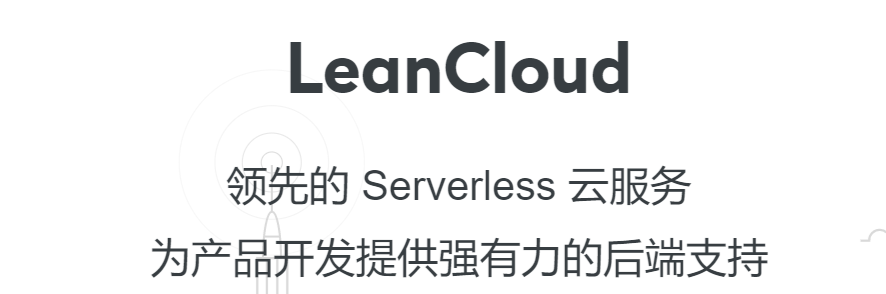
</p>
<blockquote>
<p><strong>介绍</strong></p>
<p>Lean Cloud是国内最早推出Serverless概念的公司，可以说在微信小程序没有推出云开发之前，Lean Cloud是最早支持云开发的公司，不少独立开发者都基于它的服务构建了自己的小程序。它的产品主要包括：<strong>数据存储、云函数/云开发、即时通讯、游戏解决方案(排行榜/匹配等)、邮件/短信推送</strong>。</p>
<ul>
<li>大部分产品都提供<strong>免费</strong>的套餐，对于个人开发者而言完全是足够的。</li>
<li>稳定，在国内有大量节点，符合各类政策法规。</li>
<li>你可以用它来构建站内搜索(尽管我更推荐使用Algolia来做这件事)。</li>
<li>可以用来构建静态站点的留言等需要动态数据交互的内容。</li>
<li>可以很方便地构建微信小游戏的各类基础业务，如排行榜等。</li>
<li>如果你对以上内容都不感兴趣，你可以简单把它当成一个免费的数据库，往里面存各类数据。</li>
<li>邮件推送和短信推送，比如用于构建你的密码重置服务、登录确认服务、手机号确认服务等。</li>
</ul>
</blockquote>
<ul>
<li><a href="https://leancloud.cn/" target="_blank" rel="noopener">官网地址</a></li>
</ul>
<ol start="12">
<li>Mailgun / SendGrid</li>
</ol>
<p align="center">
    
    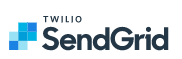
</p>
<blockquote>
<p><strong>介绍</strong></p>
<p>Mailgun是非常强大的邮件推送系统，重要的是，如果月推送在10k封邮件以下，是完全免费的——相比之下，阿里云限定了日推送免费200封，对于个人开发者而言，Mailgun的性价比显然更高。</p>
<p>而另一方面，SendGrid则提供了首月40k免费的邮件推送量，之后为<code>100/mo</code>(这一点远不及阿里云，但可以作为备用方案使用)。</p>
<ul>
<li>Mailgun的峰值邮件推送速度可达25k封/s，是业界顶尖水平。</li>
<li>你可以用它们来发送邮件验证码，比如密码重置服务、登录确认服务等。</li>
<li>对于邮件内容的审核没有阿里云严格，避免突然被BAN掉导致业务被迫下线的风险。</li>
</ul>
<p>它们都已加入GitHub黄书包，你可以在一定程度上免费使用它们。</p>
</blockquote>
<ul>
<li><a href="https://www.mailgun.com/" target="_blank" rel="noopener">Mailgun官网地址</a></li>
<li><a href="https://sendgrid.com/" target="_blank" rel="noopener">SendGrid官网地址</a></li>
</ul>
<h2 id="社群产品"><a class="markdownIt-Anchor" href="#社群产品"></a> 社群产品</h2>
<ol>
<li>Slack</li>
</ol>
<p align="center">
    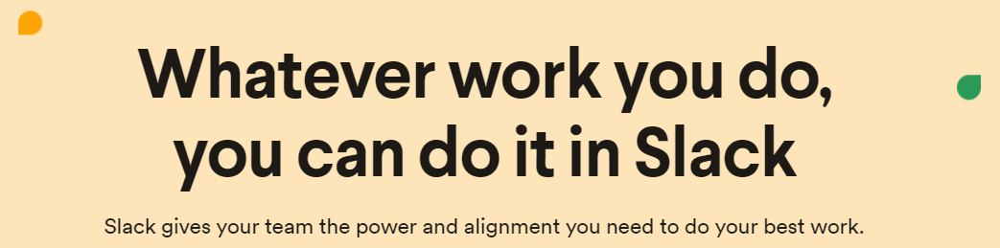
</p>
<blockquote>
<p><strong>介绍</strong></p>
<p>Slack是一个社群交流工具，你可以把它比作是一个Q群之类的东西，但是其更为高效。</p>
<p>和QQ等工具不同，Slack采用Workspace(以下简称Group)的形式进行人员组织；每一个组织是一个Group，你在每个Group都要单独注册一个账号(邮箱注册即可，很简单)。</p>
<p>好处就在于严格划分了你的账号的职能范围，不会出现类似微信那种工作强行侵袭个人生活的情况；但与此同时会产生大量碎片账号——这也是我什么会在前文推荐<code>LastPass</code>这种软件的理由。</p>
<p>作为一个软件开发者，你会发现在Slack上，有很多有着相同兴趣爱好的人聚在一起讨论一件事，如果你渴望跟全世界的开发者一起讨论开源项目或是某种技术，你应当尝试Slack。</p>
</blockquote>
<ul>
<li><a href>官网地址</a></li>
</ul>
<ol start="2">
<li>Stack Overflow</li>
</ol>
<p align="center">   
    
</p>
<blockquote>
<p><strong>介绍</strong></p>
<p>专业的BUG讨论社区，后来慢慢发展成了一个类似领英一样的求职网站。</p>
<ul>
<li>你可以在Stack Overflow讨论任何你遇到的Bug，总会有非常Nice的人帮你解决问题。</li>
<li>社区回答的质量都比较高，是因为他们遵从了<a href="https://www.jianshu.com/p/4040622dc2ec" target="_blank" rel="noopener">严格的提问和回答格式/要求</a>。</li>
<li>同时，由于是个全球性质的问答社区，因此对你的英文水平要求较高。</li>
<li>和GitHub的<code>Contribution</code>一样，你在Stack Overflow上的<code>Reputation</code>将使得你的简历变得出彩。</li>
<li>《<a href="https://blog.csdn.net/u012207345/article/details/81139665" target="_blank" rel="noopener">为什么程序员一定要会用Google和Stack Overflow？</a>》</li>
</ul>
</blockquote>
<ul>
<li><a href="https://stackoverflow.com/" target="_blank" rel="noopener">官网地址</a></li>
</ul>

            <!--[if lt IE 9]><script>document.createElement('audio');</script><![endif]-->
            <audio id="audio" loop="1" preload="auto" controls="controls" data-autoplay="true">
                <source type="audio/mpeg" src="./yumu.mp3">
            </audio>
            
        </div>
        
    <div id='gitalk-container' class="comment link"
        data-ae='true'
        data-ci='5b763306cd7b9d9c3981'
        data-cs='c31e9bf78a807055f5439caea747b09d1d9c8f18'
        data-r='image-blog.io'
        data-o='WhiteRobe'
        data-a='WhiteRobe'
        data-d='false'
    >查看评论</div>


    </div>
    
        <div class='side'>
            <ol class="toc"><li class="toc-item toc-level-1"><a class="toc-link" href="#null"><span class="toc-number">1.</span> <span class="toc-text">DaZaHui/先进生产工具搜罗和简介</span></a><ol class="toc-child"><li class="toc-item toc-level-2"><a class="toc-link" href="#what-is-this"><span class="toc-number">1.1.</span> <span class="toc-text"> What is this?</span></a></li><li class="toc-item toc-level-2"><a class="toc-link" href="#基础开发者包"><span class="toc-number">1.2.</span> <span class="toc-text"> 基础开发者包</span></a></li><li class="toc-item toc-level-2"><a class="toc-link" href="#云服务产品"><span class="toc-number">1.3.</span> <span class="toc-text"> 云服务产品</span></a></li><li class="toc-item toc-level-2"><a class="toc-link" href="#社群产品"><span class="toc-number">1.4.</span> <span class="toc-text"> 社群产品</span></a></li></ol></li></ol>
        </div>
    
</div>


    </div>
    <!--下悬浮返回键-->
    <div style="background: white; height:30px; width: 30px; border-radius: 16px; position: fixed; bottom: 1.5rem; right: 1.5rem; border: 2px solid rgba(0, 0, 0, 0.5)">
      <a class="icon-left image-icon" style="left:4px; top:4px" href="javascript:history.back()"></a>
    </div>
</div>
</body>
<script src="//cdn.jsdelivr.net/npm/gitalk@1/dist/gitalk.min.js"></script>
<script src="//lib.baomitu.com/jquery/1.8.3/jquery.min.js"></script>
<script src="/js/plugin.js"></script>
<script src="/js/diaspora.js"></script>
<link rel="stylesheet" href="/photoswipe/photoswipe.css">
<link rel="stylesheet" href="/photoswipe/default-skin/default-skin.css">
<script src="/photoswipe/photoswipe.min.js"></script>
<script src="/photoswipe/photoswipe-ui-default.min.js"></script>

<!-- Root element of PhotoSwipe. Must have class pswp. -->
<div class="pswp" tabindex="-1" role="dialog" aria-hidden="true">
    <!-- Background of PhotoSwipe. 
         It's a separate element as animating opacity is faster than rgba(). -->
    <div class="pswp__bg"></div>
    <!-- Slides wrapper with overflow:hidden. -->
    <div class="pswp__scroll-wrap">
        <!-- Container that holds slides. 
            PhotoSwipe keeps only 3 of them in the DOM to save memory.
            Don't modify these 3 pswp__item elements, data is added later on. -->
        <div class="pswp__container">
            <div class="pswp__item"></div>
            <div class="pswp__item"></div>
            <div class="pswp__item"></div>
        </div>
        <!-- Default (PhotoSwipeUI_Default) interface on top of sliding area. Can be changed. -->
        <div class="pswp__ui pswp__ui--hidden">
            <div class="pswp__top-bar">
                <!--  Controls are self-explanatory. Order can be changed. -->
                <div class="pswp__counter"></div>
                <button class="pswp__button pswp__button--close" title="Close (Esc)"></button>
                <button class="pswp__button pswp__button--share" title="Share"></button>
                <button class="pswp__button pswp__button--fs" title="Toggle fullscreen"></button>
                <button class="pswp__button pswp__button--zoom" title="Zoom in/out"></button>
                <!-- Preloader demo http://codepen.io/dimsemenov/pen/yyBWoR -->
                <!-- element will get class pswp__preloader--active when preloader is running -->
                <div class="pswp__preloader">
                    <div class="pswp__preloader__icn">
                      <div class="pswp__preloader__cut">
                        <div class="pswp__preloader__donut"></div>
                      </div>
                    </div>
                </div>
            </div>
            <div class="pswp__share-modal pswp__share-modal--hidden pswp__single-tap">
                <div class="pswp__share-tooltip"></div> 
            </div>
            <button class="pswp__button pswp__button--arrow--left" title="Previous (arrow left)">
            </button>
            <button class="pswp__button pswp__button--arrow--right" title="Next (arrow right)">
            </button>
            <div class="pswp__caption">
                <div class="pswp__caption__center"></div>
            </div>
        </div>
    </div>
</div>


</html>
